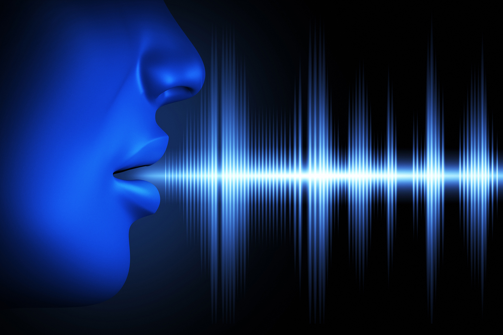

Tu voz, un posible test para la detección del coronavirus
Estos días se habla mucho de los tests para el Sars-CoV-2, tanto para identificar contagios como para comprobar si una persona ya ha pasado la enfermedad, las llamadas pruebas serológicas.En ambos casos, se trata de una herramienta fundamental en el estudio de la pandemia y a efectos de recuperar la normalidad.No obstante, la falta de disponibilidad, y los altos valores de fiabilidad necesarios, han enfriado los ánimos en lo que respecta a su uso para frenar el coronavirus.Sin embargo, podría haber alternativas.El secreto residiría en la inteligencia artificial, que ya se está utilizando en aplicaciones como la detección de coronavirus en superficies o en innovadores proyectos tecnológicos destinados a analizar los datos de contagio.Esta vez el enfoque pasa por aplicar la inteligencia artificial para reconocer patrones en la voz de los enfermos sin necesidad de muestras biológicas.Una empresa española, en colaboración con el Departamento de Salud Vasco, ya está trabajando en una solución que permita sacar partido a inflexiones en la voz que pasarían desapercibidas a una persona.
A pesar de la complejidad de la tecnología, el proceso es relativamente sencillo.Hace tiempo cubrimos una innovadora tecnología que detectaba infartos por medio de asistentes de voz domésticos.El tipo de jadeo y la respiración de un infartado bastaba para que la inteligencia artificial identificara un incidente de tales características.De hecho, la iniciativa se fraguó cuando el cardiólogo murciano Domingo A.Pascual comprobó que había cambios en la voz de las personas que habían pasado por un infarto.Ahora ese tipo de enfoque es el que se ha adoptado en esta innovadora iniciativa contra el coronavirus.
En estos momentos, se están grabando voces y sonidos en habitaciones de hospital para crear una 'biblioteca' que incluya a personas sanas, enfermas y ya curadas.Una vez recopilada una muestra válida, se pasará a identificar marcadores biométricos de los tres grupos de población.La idea es poder utilizar el reconocedor de voz en consultas médicas, pero también a través de llamadas telefónicas que podrían identificar automáticamente a posibles contagiados para remitirlos a su médico de cabecera.'Sabemos que la enfermedad COVID-19 afecta desde el inicio a las vías aéreas respiratorias superiores, por lo que esta tecnología podría tener especial importancia en la detección de casos iniciales asintomáticos, donde los test rápidos y PCR pierden utilidad y aplicabilidad', explica Pascual.Naturalmente, el reconocimiento de voz es una simple prueba preliminar que requiere análisis más detallados posteriormente.No obstante, permitirá agilizar sensiblemente los procedimientos de detección.
La inteligencia artificial es singularmente hábil en la detección de patrones, que son constatables en muchas dolencias.De hecho, ahora mismo existen varios estudios que recogen marcadores de una veintena de enfermedades respiratorias.El potencial de la tecnología, pues, no se restringe al coronavirus, sino que puede aplicarse a otras patologías también.
Por el momento, el objetivo de los investigadores de este proyecto de inteligencia artificial es poner los resultados a disposición de la comunidad científica y las administraciones públicas.Los desarrolladores estiman que tendrán los primeros porcentajes de detección de coronavirus en el plazo de tres o cuatro meses.

Content Date: n/a
Download Date: 2021-04-08
Document ID: L0C049M0K